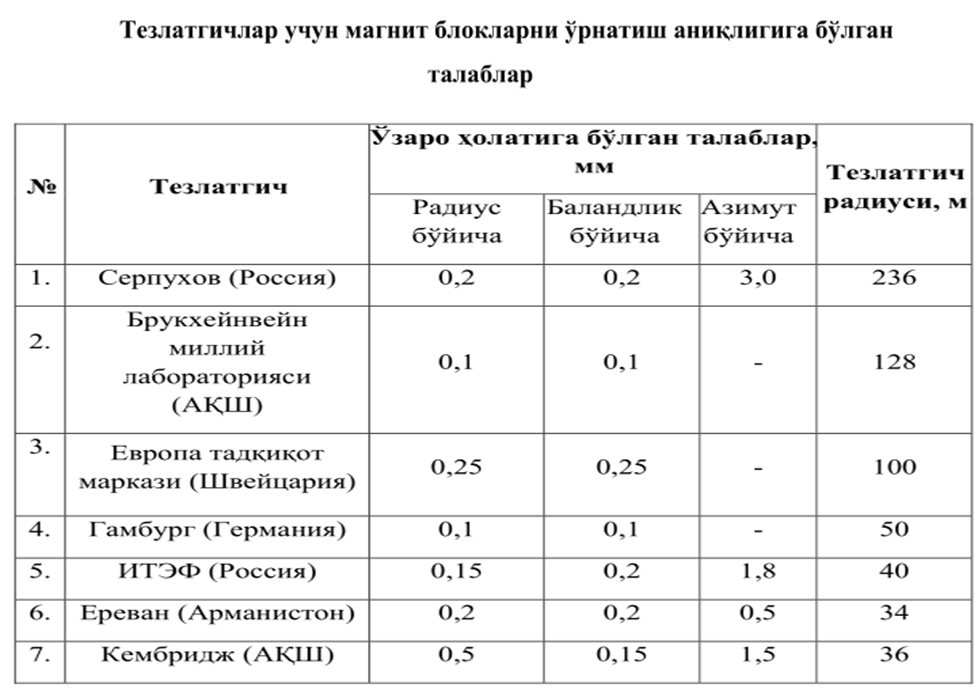
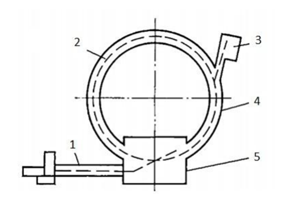
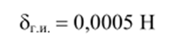
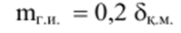
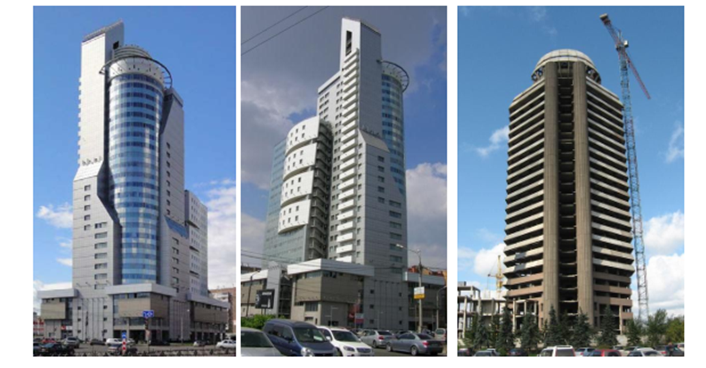
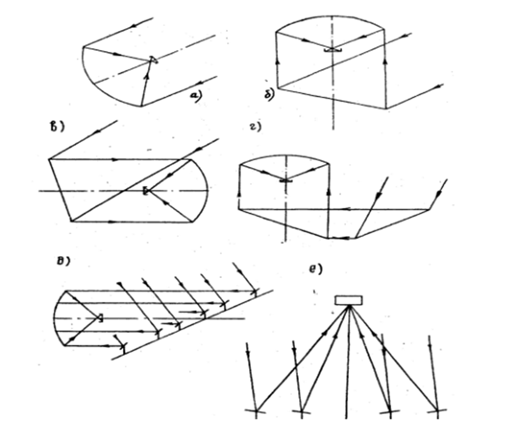
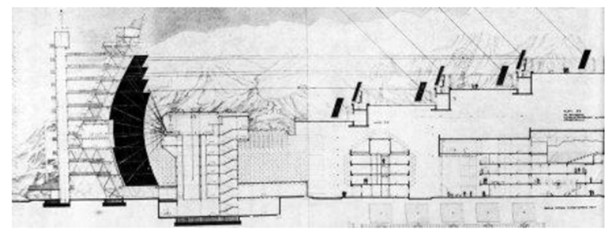
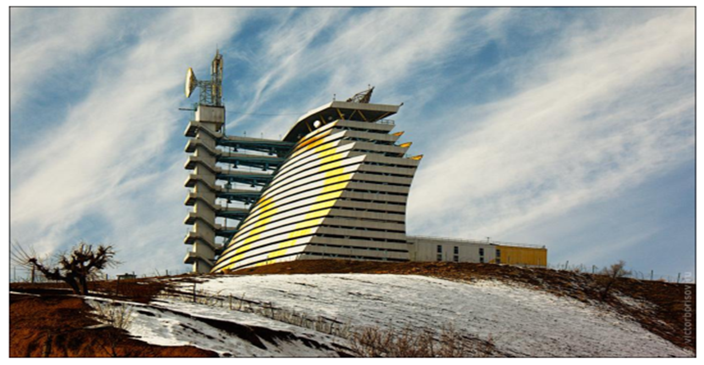

5-маруза Мавзу:Ноёб иншоотлар иншоотлари
Тайёрлаш, монтаж қилиш ишларини ҳамда элементлари ҳолати
барқарорлигини юқори аниқликда
сақлаганда мўътадил ишлаши
таъминланадиган инженерлик объектларига ноёб иншоотлар дейилади. Бу иншоотлар иккита,
бир-биридан фарқ қилувчи, лекин узвий ишловчи: инженер-қурилиш конструкциялари ва ноёб
технологик қурилмалар мажмуи қисмларидан ташкил топган. Йирик радиотелескоплар,
телеминоралар,
юқори ҳароратли гелиоқурилмалар, саноат конвейер линиялари ва бошқалар шулар жумласидандир.
Зарядланган зарраларни тезлатгичлар. Тезлатгичлар – бу катта кинетик энергияга эга
бўлган
зарядланган зарраларни ҳосил қилувчи ва
тезлаштирувчи қурилмалардир.
Зарралар ҳаракати траекторияси шаклига қараб чизиқли ва ҳалқали тезлатгичларга
бўлинади.
Чизиқли тезлатгичларда зарралар ҳаракат йўналиши тўғри чизиққа яқин, ҳалқалида айлана ёки
спиралсимон бўлади.
Барча замонавий ҳалқали тезлатгичлар учун умумийлик шундан иборатки, уларда чизиқли
тезлаткич кўринишидаги инжектор мавжуд. Унинг асосий вазифаси ҳалқасимон электромагнит
камерага зарраларни юборишдан иборат бўлиб, бу ерда зарралар лойиҳавий энергияга эга
бўлишади.
Тезлаштирилган зарралар энергияси орбита радиусига тўғри пропорционал. Шунинг учун
зарядланган зарралар энергиясининг ошиши асосан тезлатгич радиусининг ортиши ҳисобига амалга
оширилади.
Тезлатгичларнинг нормал ишлаши учун асосий технологик қурилмалар ҳолатининг ҳисобдаги
кўрсатилган қийматдан четлашиши чекланган бўлиши керак. Шундай ҳолатда вакуум камерасидаги
заррачаларнинг минимал йўқолишига эришилади.
Қуйидаги 9.1-жадвалда жаҳондаги энг йирик ҳалқасимон тезлатгичлар учун магнит блокларни
лойиҳавий ҳолатда ўрнатиш аниқлигига бўлган
талаблар келтирилган.

Жадвалдан кўриниб турибдики, замонавий тезлатгичлар учун, монтаж
жараёнидаги каби, асосий технологик ва қурилиш қисмларининг муқобиллигини кузатишда ҳам,
юқори аниқликдаги геодезик ишлар талаб
этилади.
Бундай қурилмаларнинг янада ривожланган турларини барпо этилиши,
уларни монтаж қилиш ва фойдаланишда амалга ошириладиган геодезик
ишларга бўлган талабни янада оширади.

1-расм. Серпухов тезлатгичи схемаси. 1-галерея; 2-тўплам
трассаси; 3-инжектор; 4-магнит халқа зали; 5-эксперимент зали.
Минорасимон иншоотлар. Минорасимон иншоотлар қийин шароитларда барпо этиладиган ва
фойдаланиладиган мураккаб инженерлик объектлари қаторига киради.
Бу турдаги иншоотлар, мустақил турувчи конструкция бўлиб, унинг тик ҳолатини таъминлаш
учун
ҳеч нарса билан тортиб туриш талаб этилмайди ва
унинг баландлиги бир нечта юз метрни ташкил этиши мумкин.
Минорасимон иншоотларнинг саноат иншоотлари, яшаш ва маъмурий
бинолардан асосий фарқи қуйидагилардан иборат:
1. Иншоотнинг баландлиги унинг асоси ўлчамидан анча катта бўлади.
2. Технологик қурилма конструкция оғирлигига нисбатан сезиларли бўлмаган оғирликка эга.
3. Конструкциянинг оғирлиги ва технологик қурилмаларининг
оғирлиги таъсири, шамол таъсирига нисбатан иккинчи даражали аҳамиятга
эга.
Минора асоси диаметрининг баландлигига нисбати 1:8 – 1:20 атрофида бўлади ва бу нисбат
асосан ташқи таъсир кучига, ҳамда қўлланиладиган қурилиш материалига боғлиқ.
Миноралар шакли тик ўқига нисбатан симметрик бўлган ҳолда призма, цилиндр, пирамида ва
гипербола шаклида бажарилади. Призма ва цилиндр шакли баландлиги катта бўлмаган, пирамида ва
конус шакли эса баланд (180 м ва ундан катта) иншоотлар учун қўлланилади.
Кейинги вақтларда атроф муҳитни муҳофаза қилишга бўлган талабларни эътиборга олган ҳолда
минорасимон иншоотлар баландлигини оширишга интилиш кузатилмоқда.
Минорасимон иншоотлар энергетик объектларда, алоқа ва транспорт тизимида, саноат, кимё
ва
бошқа соҳаларда кенг қўлланилади.
Айрим радиотеле миноралар ноёб иншоотлар қаторига киритилади. Одатда, бундай иншоотлар
катта шаҳарларда барпо этилади, шунинг учун уларга юқори архитектуравий талаблар қўйилади.
Бундай иншоотлар қаторига Париждаги Эйфелева, Москвадаги Останкино, Канададаги Торонто,
Киевдаги ва Тошкентдаги теле-радио минораларни киритиш мумкин.
Баланд минорасимон иншоотлар оғишини аниқлашнинг хатолик чеки би, қуйидаги ифода
ёрдамида
аниқланади:

Қурилиш монтаж ишларини геодезик таъминлаш жараёнидаги ўлчашлар
ўрта квадратик хатолиги

бу ерда 8км.- конструкция ҳатолигининг чекли хатоси.
Ҳозирги пайтда катта майдонга эга бўлган антеннали радиотелескоплар
қурилмоқда.
Бу юқори сезгирликни таъминлашга имкон беради. Радиотелескопнинг диапазони қанча кенг бўлса,
шунча кўп масала ечилиши мумкин.
Рефлектор майдонининг катталашиши, эришиши мумкин бўлган юза аниқлигига боғлиқ равишда
чегараланган бўлади. Рефлектор шаклининг талаб қилинган шаклдан четлашиши тўлқинларнинг
сийраклашишига олиб келади, натижада рефлектор майдонидан фойдаланиш коэффициенти
пасаяди. Бу пасайиш юзанинг тасодифий хатоси є нинг тўлқин узунлиги 2 га нисбатан
қийматига боғлиқ равишда тез ўсади. Симметрик парабола шаклидаги рефлекторнинг қайтарувчи
(акс эттирувчи) юзасининг нисбий хатолиги, яъни є нинг диаметрга нисбати, энг яхши
ҳисобланган радиотелескорлар учун 1 - 2-10* қийматга яқин. Бундай юқори аниқликка
Вашингтондаги 15 метрли радиотелескопда эришилган. Нисбий хатолик нафақат монтаж жараёнидаги
хатолик билан чегараланади, балки конструкция оғирлиги, шамол, қиздириш таъсирида юзага
келувчи деформация ҳам сезиларли таъсир кўрсатади.
Ҳозирги вақтда айлана узунлиги километрларни ташкил этадиган радиотелескоплар
яратилмоқда.
Уларни монтаж қилиш ва фойдаланишдаги геодезик ўлчашлар нисбий хатолиги 1-10° дан кичик
бўлмаслиги керак.
Радиотелескопларнинг қайтарувчи юзаларини созлаш учун 0,05-0,1 мм ўлчаш аниқлигини
таъминлайдиган оптикавий, струнали-оптикавий ва юқори аниқликдаги нивелирлаш усуллари
қўлланилади.

2-расм. Минорасимон иншоотлар
Юқори ҳароратли гелиокурилмалар. Гелиоэнергетика ҳозирги кунда халқ хўжалигининг
истиқболли
йўналишларидан бирига айланмоқда.
Ернинг қуёшдан бир йиллик оладиган энергияси 58 -10° квт.соатни ташкил
этади, бу ҳозирги кунда олинаётган барча энергия манбаларидан 20000 марта кўпдир.
Қуёш юзасидаги нур оқими зичлиги 6,4:10 вт / м“, ер юзасида эса
нисбатан юқори эмас, 1400 Вт/м” ни ташкил этади.
Турли хил иссиқлик ўзгартирувчилар ёрдамида олинган қуёш энергияси электр ва иссиқлик
энергиясини ишлаб чиқишда, иситиш, иссиқ сув билан таъминлаш, қишлоқ хўжалиги маҳсулотларини
қуритиш, шўр сувларни чучуклаштириш ва бошқа соҳаларда қўлланилмоқда.
Ўтказилган тажрибалар кўрсатдики, куёшли сув иситгич ёрдамида, атроф муҳит ҳарорати-25-27°с
бўлганда, сув ҳароратини 60°С гача кўтариш мумкин. Иситиладиган сув ҳарорати, биринчи
навбатда, сутканинг вақтига ва қуёш радиациясининг жадаллигига боғлиқ.
Муҳим илмий ва инженерлик масалаларини, шу жумладан, юқори ҳароратларда бирикмаларни
синовдан ўтказиш, нур билан пайвандлаш, соф ҳолда қоришмалар олишда ойнали тўпловчи
тизимлардан фойдаланиш зарурияти туғилади. Қуёш нурини тўплаш фокуслаш йўли билан, яъни
қуёшнинг ҳақиқий аксини ойна ёки линза фокусида ҳосил қилиш орқали амалга оширилади. Бунда
юзаси ботиқ бўлган ойнадан фойдаланилади.
Катта ўлчамдаги тўпловчи юзалар сферик ойналар тўпламидан ташкил
этилиши мумкин.
Ҳозирги кунда қуёш энергиясини тўплашда турли хилдаги қурилмалар кенг қўлланилмоқда (3-
а, б, в, г, д, е расм).
Бу қурилмалар қайтарувчи элементларига қараб шартли равишда бир ойнали ва кўп ойналига
бўлинади.
Бир ойнали тизимлар (3-а расм) нур тўплаш даражаси бўйича максимал имкониятларга эга.
Уларнинг асосий камчилиги, ундан фойдаланиш давридаги туғиладиган қийинчиликлар, яъни катта
ҳажмдаги нур тўпловчи ва қабул қилиш қурилмасини қуёш ҳаракатига мос равишда
ҳаракатлантиришдан иборат.
Шу сабабли тўпловчи тизимлар кўп ойнали (9.2-б,в,г,д,,е расм), бир-бирига боғлиқ бўлган
элементлардан ташкил топган бўлади.
Бундай тизимларнинг асосий камчилиги, қайта акс эттириш сони ортиб
бориши билан қувват камаяди.
Бугунги кунда гелиоқурилмалар тараққиётини учта йўналишга бўлиш
мумкин:
-юқори ҳароратли технологик жараёнларни амалга ошириш учун қуёш печларини барпо этиш;
-қуёш энергиясини электр энергиясига айлантириш учун қуёш электростанцияларини қуриш;
-қишлоқ хўжалиги эҳтиёжи учун гелиоқурилмалар барпо этиш. Қуёш печларининг инженерлик
техникавий кўрсаткичлари. Юқори ҳароратли қуёш печларининг асосий вазифаси - маълум
миқдордаги қуёш энергиясини йиғиш ва уни кичкина майдончада тўплаш. Бунда бир жойга тўплаш
қуёш нурини фокуслаш йўли билан амалга оширилади

3-расм. Қуёш энергиясини тўплаш қурилмалари
Қуёш печи қуйидаги асосий элементлардан иборат: гелиостат, йўналтирувчи датчик,
концентратор, иссиқлик қабул қилувчи, иссиқлик қабул қилувчини силжишиш мосламаси.

Паркентда жойлашган катта қуёш печи (КҚП) схемаси.

4-расм. Паркентда жойлашган катта қуёш печи (КҚП)
Гелиостат қуёш печи элементларининг асосийларидан бири ҳисобланади ва қуёш нурини тутиш
ҳамда унинг йўналишини ўзгартиришни таъминлайди. Гелиостат оптикавий ва механикавий
қисмлардан иборат. Оптикавий қисми
кўтарувчи рамага мустаҳкамланган алоҳида ясси ойналардан ташкил топган,
механикавий қисми эса кўтарувчи рама, устун ва геолистатни горизонтал ҳамда вертикал ўқлар
атрофида айланишини таъминловчи редуктордан
ташкил топган.